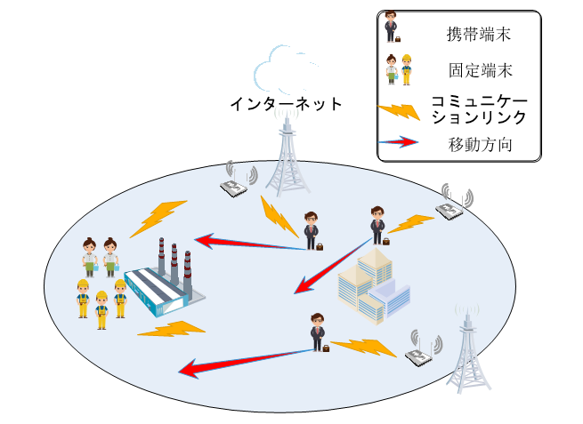

研究テーマ
[1]アドホックネットワークにおけるマルチユーザ協調移動制御に基づく通信品質の改善
[2]強化学習を応用したマルチインテリジェント端末協同移動制御システムの開発
[3]グラフ理論に基づくV2X経路計画
キーワード
モバイルアドホックネットワーク、V2X、ゲーム理論、強化学習
研究内容 1
アドホックネットワークにおけるマルチユーザ協調移動制御に基づく通信品質の改善
研究内容 2
強化学習を応用したマルチインテリジェント端末協同移動制御システムの開発
インテリジェント端末協同移動制御システムでは、まず図2のようなノード配置シナリオを数学的にモデル化し、端末の移動範囲を制限し、強化学習を用いて複数の端末すべてに最適なポリシーを得ることで、実時間で最終的に全体の通信品質を飛躍的に向上させることができる。提案手法の長所と短所を踏まえた定性的な評価として、提案された強化学習ベースのアルゴリズムは、一般的なネットワークトポロジーから複雑なネットワークトポロジーまで有効である、すなわち普遍的に適用可能な見込みである。定量的な評価として、AIの学習結果と実際のシミュレーション結果を比較して、定性的な評価の正しさを示すことで、その妥当性を示す。この強化学習手法では、従来のヒューリスティック・アルゴリズムと比較して、通信品質性能を20%～30%に向上させることができる。[J4]

研究内容 3
グラフ理論に基づくV2X経路計画
Vehicular data offloadingは、車載5 G技術の閉ループとして、すなわち、車−スマート端末(V 2 P)を介してEdge serverまたはクラウドにデータを転送し、低遅延高速通信を実現する。複雑な交通の下でMANET通信に基づく車両Path Planning問題(NP-hard)を解決するために、衝突図に基づく探索(MTOP)アルゴリズムを提案し、Upper boundとLower boundを計算することにより、近似最適解のDomainを得、時間的複雑さを低減した。従来の図探索アルゴリズムに比べて、時間複雑度は44.12%減少し、通信遅延は37.91%減少した。[C6][J2]